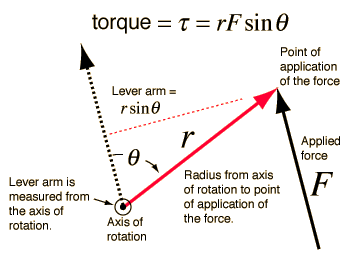

Torque Calculation
|
 |
In the diagram, the angle is the angle <= 180 degrees between the r and F vectors when they are drawn from the same origin. The direction of the torque is given be the right hand rule, which gives a vector out toward the reader in this case. Note that the torque is maximum when the angle is 90 degrees. |
A practical way to calculate the magnitude of the torque is to first determine the lever arm and then multiply it times the applied force. The lever arm is the perpendicular distance from the axis of rotation to the line of action of the force.
The direction of the torque associated with the illustration above is toward you. That is, it is along the rotation axis in the direction out of the screen.
|
Index
Rotation concepts
Torque concepts |